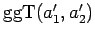

Inhalt Index DeskTop Bronstein

 Algebra und Diskrete Mathematik Elementare Zahlentheorie Lineare Diophantische Gleichungen
Algebra und Diskrete Mathematik Elementare Zahlentheorie Lineare Diophantische Gleichungen


Es sei
eine lösbare DIOPHANTische Gleichung, d.h. . Um eine spezielle Lösung der Gleichung zu erhalten, dividiert man die Gleichung durch den und erhält a'1 x'1+a'2x'2 = b' mit .
Wie unter GgT als Linearkombination beschrieben, berechnet man nun den  mit Hilfe des EUKLIDischen Algorithmus, um schließlich eine Darstellung von 1 als Linearkombination von a'1 und a'2 zu erhalten: .
Durch Einsetzen in die Ausgangsgleichung kann man sich davon überzeugen, daß das geordnete Paar (c'1 b',c'2 b') ganzer Zahlen eine Lösung der vorgegebenen DIOPHANTischen Gleichung ist.
Die Lösungsgesamtheit der Gleichung (5.263a) erhält man wie folgt: Ist (x10,x20) irgendeine spezielle Lösung, die man auch durch Probieren erhalten haben könnte, dann ist die Menge aller Lösungen:
| (5.263b) |
| Beispiel A |
|
114x+315y=6. Man dividiert durch 3, denn 3= . Daraus folgt 38x+105y=2 und (s. GgT als Linearkombination). Das geordnete Paar ist eine spezielle Lösung der Gleichung |
| Beispiel B |
|
Die Lösungsmenge der Gleichung 114x+315y=6 ist . |